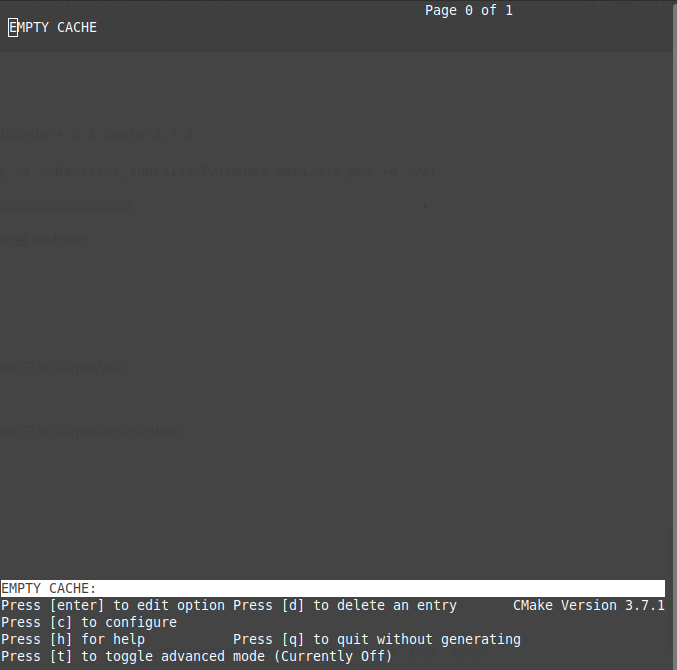

MDSTRESS-LIB
Basic information
Official Website: https://www.mdstress.org/index.php/mdstresslib/
Downloads page: https://www.mdstress.org/index.php/downloads/
Installed on: APOLO II
Tested on (Requirements)
OS base: CentOS (x86_64) \(\boldsymbol{\ge}\) 8
- Dependencies to run mdstress-lib:
fftw
lapack
Installation
For the installation process we’ll follow the guide on the gromacs documentation [1]
First of all, we need to load the following modules for the compilation
$ module load fftw/3.3.5_intel_impi-2017_update-1 $ module load cmake/3.7.1 $ module load lapack/3.6.1_gcc-4.9.4
Then download the tar.gz file and unpack it
$ wget --trust-server-name https://www.mdstress.org/index.php/download_file/view/50/173/ $ tar -xzvf mdstress-library-12282019.tar.gz $ cd mdstress-library
Then we need to create a directory named “built”, and then we run the cmake tool
$ mkdir build $ cd build $ ccmake ../
The interface of cmake will appear and you have to edit a few things
Then press c to configure
Set CMAKE_INSTALL_PREFIX to the installation dir
Press c again and the it will appear the option to press g, press it and do make and make install
References
- Author:
Manuela Herrera-López